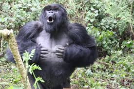
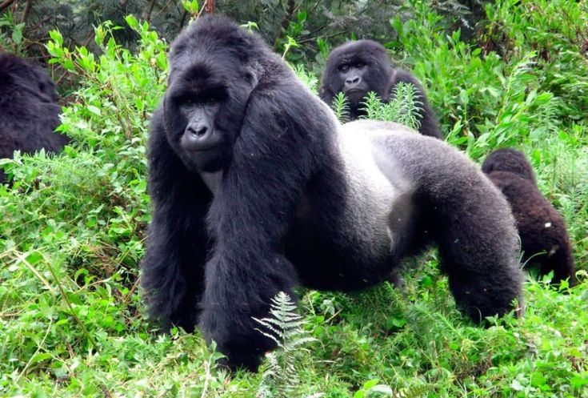

El gorila de montaña (Gorilla beringei beringei) es una de las dos subespecies de gorila oriental y habita en los bosques de las montañas Virunga, en la frontera de Ruanda, Uganda y la República Democrática del Congo. Son primates robustos con un pelaje más grueso que otras especies de gorilas, adaptado a las bajas temperaturas de su hábitat de gran altitud. Aunque todavía están clasificados como **en peligro crítico**, son un éxito de conservación, ya que su población ha crecido lentamente gracias a los intensos esfuerzos de protección contra la caza furtiva, las enfermedades y la pérdida de hábitat. Los machos adultos son conocidos como "espalda plateada" por la franja de pelo gris en su espalda.


